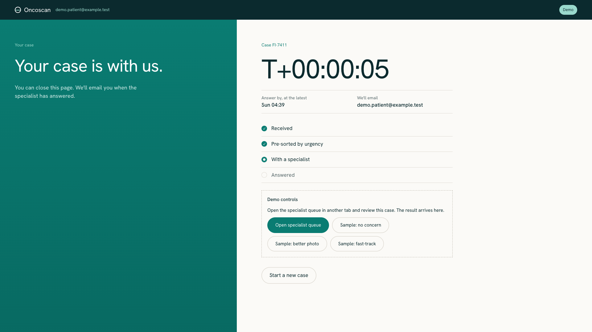
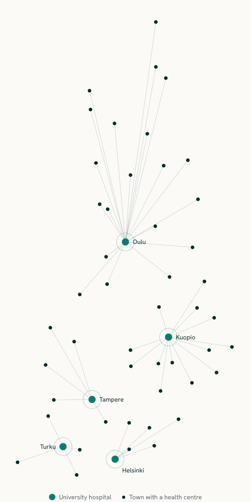
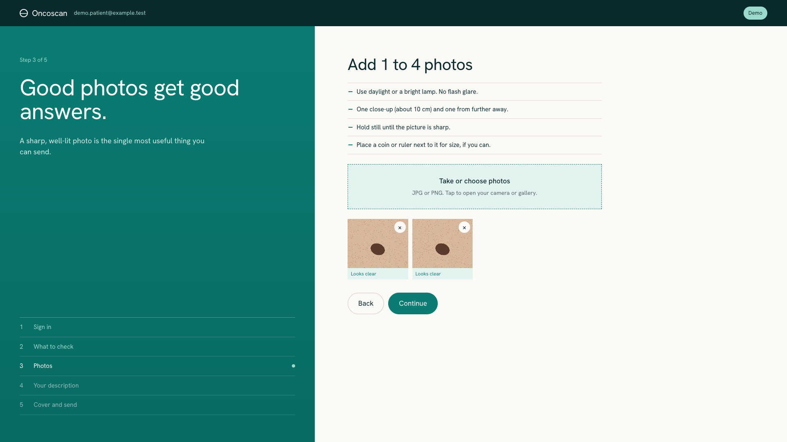
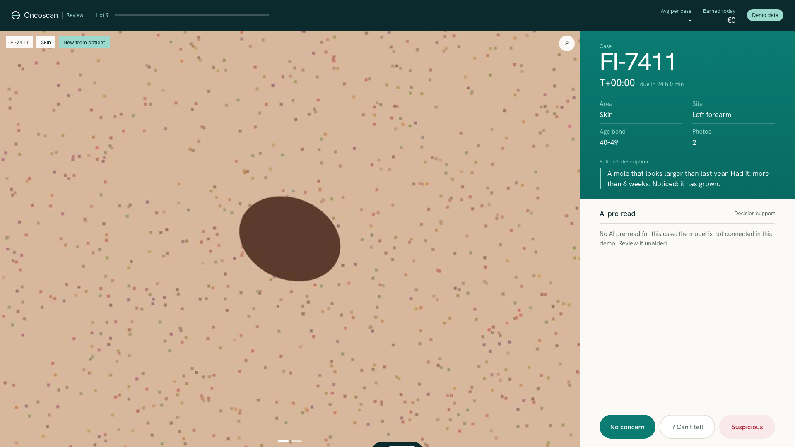
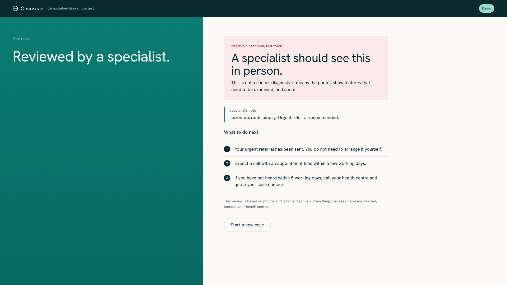

Oncoscan · Equal Care Across Finland
Photo-first review for a worrying spot. Working prototype.

The problem
The brief names late detection and referral as bottlenecks.
Farthest town: about 550 km away (estimate).

The demonstration



Engineering
Advantage
| Standard referral | Oncoscan prototype | |
|---|---|---|
| First look | After appointment | From the photo |
| Answer target | Not stated | 24 hours |
Design comparison; not measured.
Outcome
Not built yet
AI model, Goal 3 data, real sign-in.
Next
Goal 3 indicator, a model, clinician tests.